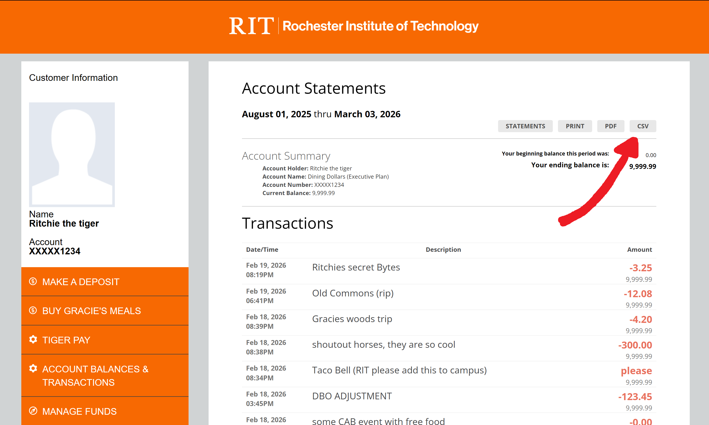

Getting Started
TigerSpend++ helps you analyze your dining expenses by uploading CSV files containing transaction data.
Step 1: Get CSV file
Navigate to tigerspend.rit.edu/index.php, after logging in click "view more" and select the correct account to see an expanded transaction history.
Click the "CSV" button to download your transaction history as a CSV file.

Step 2: Get Rollover (if needed)
If you started this term with a rollover balance, you must also download the rollover CSV file from the tigerspend website. This file contains the balance that was rolled over from the previous term. Upload both files to TigerSpend++.
Step 3: Upload Files
Once you have your CSV files, return to the TigerSpend++ page and click "Upload CSV File(s)" to select and upload the files from your device. you can upload files one at a time, or upload multiple files at once.
Step 4: Add More Files (Optional)
Click "Upload Another" to add additional CSV files to your list. Files will be combined for a comprehensive analysis.
Step 5: View Statistics
Once you're satisfied with your file selection, click "View Statistics" to navigate to the dining statistics page.
Tips
- You can upload files from different time periods and they'll be combined automatically.
- To get a complete dining history, download both the main and rollover csv files
- Headers from subsequent files will be skipped when combining.
- Use the Remove button to exclude files you don't need.
- All files are processed in your browser, no data is sent to external servers.
- It's not recommended to upload files from different people, as some data may get messed up, however try it if you want!
- This site is built for desktop. It might work on mobile, but I havent fully figured that out yet